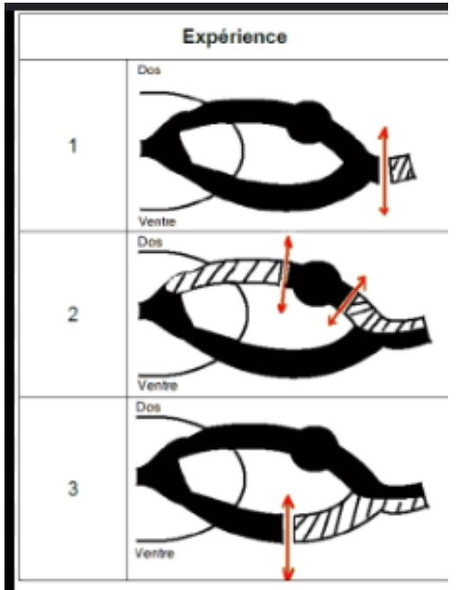

Explications : Le thalamus est dans le diencéphale. Le télencéphale contient aussi de la substance blanche.
Explications : Les 3 subdivisions sont l'archéocervelet, le paléocervelet et le néocervelet. Les 3 couches sont la couche moléculaire, les cellules de Purkinje, et la couche granulaire.

Explications : Lié à l'anatomie de la moelle épinière : la racine dorsale est sensitive, la racine ventrale est motrice, le nerf spinal est mixte.
Explications : Le cortex possède 5 lobes (et non 5 aires sensorielles). L'unité fonctionnelle est en colonne de 6 couches plus ou moins développées selon l'activité.
Explications : Le tact grossier appartient à la sensibilité protopathique. La voie extra-lemniscale concerne l'information nociceptive + thermique + tact grossier. Seuls les mécanorécepteurs tactiles (Aβ) sont myélinisés, les thermorécepteurs et nocicepteurs cutanés sont peu ou pas myélinisés.
Explications : Uniquement le SNC est entouré par les méninges. Le télencéphale est constitué aussi de la substance blanche. Le thalamus est dans le diencéphale.
Explications : Les ganglions sont constitués de substance grise. La moelle épinière se termine au niveau de la première vertèbre lombaire. L'épinèvre entoure l'ensemble des faisceaux d'un nerf.
Explications : La couche du manteau forme la substance grise.
Explications : Il est positif en extracellulaire (PEC) et négatif en intracellulaire (NIC). Les canaux de fuite potassiques permettent la sortie de K+. Les pompes na+/k+ fonctionnent contre le gradient de concentration.
Explications : Le potentiel d'action permet l'exocytose des neuro-transmetteurs. Il y a une entrée de sodium quand il y a excitation (l'inhibition correspond au chlore). Les PPS se déplacent en diminuant d'amplitude.
Explications : Rolando est devant la zone pariétale, Sylvius est près du temporal. Dans l'aire motrice, les couches III et V sont très développées car ce sont des efférences motrices.
Explications : Les cellules de Purkinje envoient des informations efférentes vers les noyaux cérébelleux. Les corps cellulaires des fibres moussues sont dans le pont qui appartient au tronc cérébral.
Explications : Les axones de Purkinje se dirigent vers les noyaux gris centraux. Archéo = équilibre = noyaux fastigiaux = lobe flocculo-nodulaire. Paléo = tonus musculaire = noyaux interposés. Néo = coordination des mouvements = noyaux dentelés (néocervelet).
Explications : Se trouve en arrière du tronc cérébral. Il reçoit des informations de la moelle épinière, mais aussi du tronc cérébral et du cortex cérébral.
Explications : Afférent = qui arrive. Efférent = qui effectue. L'influx va des récepteurs sensoriels vers le SNC. Le tronc cérébral contient les corps cellulaires (bulbe rachidien pour les nerfs crâniens).
Explications : Le tube neural est formé à partir de l'ectoblaste. Les phases sont bien dans cet ordre.
Explications : Si les fibres sont myélinisées, il s'agit d'une propagation saltatoire (saut de nœud de Ranvier en nœud de Ranvier).
Explications : Le muscle effecteur est le même que celui stimulé. L'arc = stimulus -> récepteur -> voie afférente sensorielle -> centre nerveux -> voie efférente motrice. Le circuit polysynaptique avec interneurone excitateur est pour le réflexe de flexion.
Explications : La voie pyramidale correspond à la motricité volontaire. La voie cortico nucléaire est pour les nerfs crâniens.
Explications : Toujours myélinisés car ils sont très longs et l'information doit être rapide. C'est la voie commune à toutes les voies de commande.
Explications : En profondeur, les champs sont larges. Les récepteurs phasiques sont rapides (début + fin). Les propriocepteurs sont utiles dans les réflexes et le tonus (fuseau neuromusculaire, organe tendineux de Golgi, récepteurs articulaires).
Explications : Les 4 aires sont 3a, 3b, 1 et 2. Les informations arrivent sur la couche IV.
Explications : La voie extra lemniscale donne des informations tactiles grossières uniquement (tact fin pas en extra-lemniscal). La somesthésie compte 3 neurones et 2 relais. Les fibres ne sont pas toujours myélinisées. L'organisation est somatotopique. Le relais s'effectue jusqu'au cortex cérébral.
Explications : Les enképhalines l'atténuent. Les neurones à convergence répondent à différents stimulus. Les nocicepteurs ont des terminaisons libres.
Explications : Mémoire déclarative = mémoire à long terme. Le circuit de Papez amène vers l'hippocampe. La plasticité synaptique permet la mémoire (et l'inverse).
Explications : AMPA = canal au sodium (Na+), NMDA = canal au calcium (Ca2+). La potentialisation à long terme correspond aussi à la plasticité synaptique.